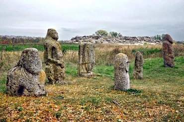

У самому серці Європи знаходиться прекрасна країна Україна. Вона з'єднує Схід і Захід, як міст, і відіграє важливу роль у житті обох. Україна має глибоке історичне багатогранне минуле, багату культуру та традиції. Україна - це країна з чудовою природою і рідкісним колоритом традицій, країна лікувального м'якого мікроклімату, самобутнього народного мистецтва і глибокої слов'янської культури. Багата історико-культурна спадщина, озера, річки, ліси з лісовими ягодами та грибами, лікувальні торф'яні грязі, мінеральні води, риболовля... все це створює необхідні передумови для організації та функціонування культурно-пізнавального, оздоровчого, спортивного, сільського та інших видів туризму!
Культура та історія України
Перша у світі конституція, в які окреслили права громадян та уряду, була розроблена та введена в дію у 1710 році українським гетьманом Пилипом Орликом. Для порівняння, конституція США, була розроблена і прийнята у 1787 році.Запорізька Січ — суспільно-політична та військово-адміністративна організація українського козацтва, що була заснована у 1553-1554 роках, сьогодні вважається одним з перших демократичних утворень у світі.З 12 лавр світу 4 знаходяться в Україні: це Києво-Печерська лавра (Київ, існує з 1051 року), Почаївська лавра (Почаїв, Тернопільської області, з 1833), Свято-Успенська Святогірська лавра Святогірськ, Донецької області (отримала статус лаври у 2004 році) та Свято-Успенська Унівська лавра студійського уставу (Унів з 1898).Українські народні пісні стали підґрунтям для створення багатьох світових музичних шедеврів. Наприклад, композиція “Summertime” Джорджа Гершвіна була написана на основі української колискової “Ой, ходить сон коло вікон”, яку він почув у виконанні Національного хору України під керівництвом Олександра Кошица. Україна відмовилася від третього у світі (після США та рф) за величиною арсеналу ядерної зброї. У момент проголошення незалежності, на території України було розташовано більш як 1000 ядерних боєголовок і ракет. Чому? Відповідь тут. Найстародавніша у світі мапа, вибита на кістці мамонта, а також найстародавніше поселення Homo Sapiens знайдені в Україні, у селі Межиріччя Рівненської області. Їм 14,5-15 тисяч років.На території України знаходиться цивілізаційна колиска світу, старша за Єгипетські піраміди та Стоунхендж – комплекс Кам'яна могила у Запорізькій області.
Дивовижні факти природи та ресурси України
У 1929 році СРСР заявила, що на території України зосереджено близько 60% від усіх розвіданих запасів газу, після чого країна стала одним з найбільших експортерів блакитного палива у Європу на певний проміжок часу. А сьогодні Україна посідає 3 місце за кількістю розвіданих даних сланцевого газу в Європі, випереджають її тільки Польща та Франція.Україна має найбільший запас марганцевої руди у світі, 2,3 млрд тонн або близько 11% від усіх покладів на Землі.Українська печера “Оптимістична” – є найдовшою гіпсовою печерою у світі та другою за протяжністю після “Мамонтової печери” в США.На території України зосереджено 1/4 всіх запасів чорнозему на Землі. Єдина у світі підводна річка знаходиться у Чорному морі. Якби вона була на суші, то займала б шосте місце за обсягами води, що переносить (22 тискубічних метрів на секунду).В Україні є свої Мальдіви – дивовижні пляжі з білим піском та прозорим блакитним морем. Знаходяться вони на понівеченому росією заповідному острові Джарилгач, що на Херсонщині. Зауважимо, що місцеві флора й фауна занесені до Червоної книги, а також тут раніше жили мустанги й верблюди.

Населення
Станом на 1 лютого 2015 року, за даними Держстату, чисельність населення України становила 42 741 248 осіб постійного населення та 42 910 885 осіб наявного населення.
На сьогодні більшість населення країни становлять українці. Другою за чисельністю нацією є росіяни (їхня частка перевищує 17,28% населення). Відносно великими етнічними групами населення України є білоруси (0,57%), молдавани (0,54%), кримські татари (0,51%), болгари (0,42%), угорці (0,32%), румуни (0,31%), поляки (0,30%) та інші. Середня очікувана тривалість життя для чоловіків становить - 65 років, для жінок - 74 роки.

Релігія
Основною релігією в Україні є християнство. Більшість віруючих - християни, більшість з яких належать до православних церков. Католицька церква представлена Українською греко-католицькою церквою і в основному поширена в Галичині (Тернопільська, Львівська та Івано-Франківська області). Крім того, в Україні існують протестантизм, іудаїзм та іслам.
Транспорт
В Україні розвинені майже всі види сучасного транспорту: залізничний,автомобільний, морський, річковий, повітряний.Залізнична мережа країни поділяється на шість доріг (напрямків): Донецька, Львівська, Одеська, Південна, Південно-Західна та Придніпровська. Максимальна швидкість пасажирських поїздів - 160 км/год. Загальна довжина колій становить 22473 км.
З України можна легко дістатися практично до будь-якої країни Центральної та Західної Європи, а через територію Білорусі - до країн Балтії.
Автомобільний транспорт значно переважає над іншими видами. Через Україну проходять 23 міжнародні дороги. Загальна протяжність автомобільних доріг становить 169 491 км. Основні автомагістралі країни: Київ - Львів, Київ - Харків, Київ - Брест, Дніпро - Нікополь, Київ - Одеса, Одеса - Миколаїв, Херсон, Біла Церква - Вінниця, Хмельницький, Дніпро - Запоріжжя.Найбільша річка України - Дніпро - судноплавна. Україна має вихід до двох морів - Азовського та Чорного. Морський транспорт здійснює перевезення вантажів і пасажирів у Чорноморсько-Азовському басейні.
Повітряний транспорт також розвинений, в Україні налічується понад 20 аеропортів. Деякі міста України (Київ, Одеса, Львів, Харків) мають по два аеропорти. Головними повітряними воротами країни є аеропорт "Бориспіль".
Часовий_пояс
Час в Україні визначається як UTC+02:00, а влітку як UTC+03:00. Місцевий час називається київським і є частиною східноєвропейського часу. Перехід на літній час відбувається в останній тиждень березня о 03:00, коли час переводиться на годину вперед, і в останній тиждень жовтня о 04:00, коли час переводиться на годину назад; таким чином, годинник в Україні завжди на 1 годину випереджає годинник у Центральній Європі. Майже 95% території України знаходиться у східноєвропейському часовому поясі, за винятком її західної та східної околиць. Невелика частина Закарпатської області розташована в центральноєвропейському часовому поясі, тоді як Луганська область, більша частина Донецької області та частина Харківської області географічно розташовані в далекосхідному часовому поясі. Проте вся країна офіційно дотримується східноєвропейського часу.Щорічно в Україні вводиться літній час: в ніч на останню неділю березня годинникову стрілку переводять на одну годину вперед. Це дає можливість повніше використовувати світлу частину доби та економити електроенергію. У ніч на останню неділю жовтня стрілки годинника повертають на годину назад, відновлюючи часовий пояс.